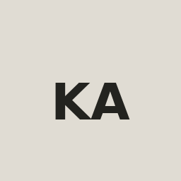

PROJECTS
Selected work & experiments.
Websites, interfaces and email experiences built with attention to clarity and responsive behavior.

PROJECTS
Websites, interfaces and email experiences built with attention to clarity and responsive behavior.